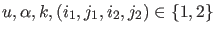
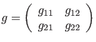
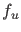
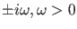
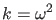
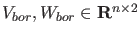
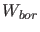
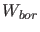

In the MATCONT / CL_MATCONT toolbox Hopf curves are computed by minimally extended defining systems,
cf. [22] §4.3.4.
The Hopf curve is defined by the following system
with the unknowns
 and where
 is obtained by solving
where  has eigenvalues
,  and
 are chosen such that the matrix in
(62) is nonsingular.
 and  are auxiliary
variables that can be adapted.
This method is implemented in the curve definition file hopf.m.
and  are auxiliary
variables that can be adapted.
This method is implemented in the curve definition file hopf.m.